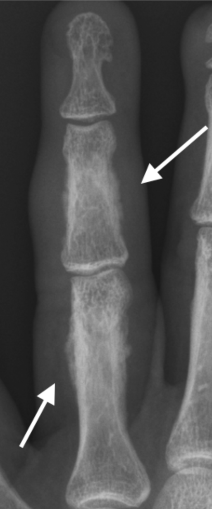

Soft Tissue Swelling
- Soft tissue swelling may be localized or diffuse
- In arthritis it is usually localized and periarticular and may be the first sign of inflammation.
- It may represent:
- soft tissue oedema secondary to underlying active inflammation within a joint
- displacement of soft tissue related to an underlying joint effusion/synovitis
- it may be secondary to tendinosis and tenosynovitis.
- Findings may be subtle and include convexity to the soft tissue contour, loss of discrete fat planes and increased attenuation of the soft tissue.
- In dactylitis there is diffuse soft tissue swelling of a digit (finger or toe), also known as a sausage finger. This occurs in seronegative arthritis, most commonly psoriatic arthritis. May also occur in non-arthritis conditions including infection and sickle cell disease.
- Review the skin surface for irregularity/ulceration and soft tissue air suggesting injury or infection. Exclude radiopaque foreign bodies.
- Soft tissue swelling of increased density may represent a gouty tophus which may eventually calcify
Example Radiograph

Multifocal gouty tophi (arrows) with soft tissue nodular lesions of increased attenuation when compared to normal soft tissue. Note also multifocal erosions

PsA with diffuse soft tissue swelling (dactylitis) 4th digit and periosteal new bone formation proximal and middle phalanges (arrows).

Soft tissue swelling at second MCPJ due to underlying effusion and synovitis (confirmed on ultrasound) in a patient with rheumatoid arthritis